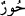
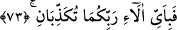

72. Otağlar içinde sâhiplerine tahsis edilmiş hûriler vardır.
“__WORD__/Hûr” kelimesi, “bembeyaz” anlamındaki “havrâ” kelimesinin çoğuludur. Başka
âyetlerde cennet hûrileri, “iri gözlü” anlamındaki “aynâ” kelimesinin çoğulu olan “în”
kelimesiyle sıfatlanmıştır. Bazıları da “în”in, “göz bebeği simsiyah” anlamında
olduğunu söylemişlerdir. Eşleri için örtüleri içinde saklanmış ve başkalarından
alıkonulmuşlardır, eşlerinden başkalarına gözükmezler. Cennet her ne kadar teklif yeri
değilse de yabancılardan kıskanılıp sakınıldığı için korunan sırlar kabilindendir.
Gözlerini eşlerine ayırmış, başkalarını görmez ve başkalarını istemezler.
“Hıyam” kelimesi, “direkler üzerine kurulmuş kubbe” anlamındaki “hayme”
kelimesinin çoğuludur. Dünyadaki çadırların hepsi böyledir. Cennet çadırlarına isimden
başka benziyen yönleri yoktur.
Denildi ki, hûrîlerin çadırlarından her bir çadır, genişliği altmış mil olan, ortası boş
bir cennet incisidir. Her odasında mutlu aileler vardır. Mü’minler onları dolaşıp ziyaret
etmedikçe görülmezler.
Kâşifî demiştir ki; yabancıların gözlerinden korunmuş, çadırlarda tutulmuşlardır
İbn Mesûd (r.a.) demiştir ki; cennetteki her hanım eş için altmış mil genişliğinde birer
çadır vardır. Yâni gerdek evinde mahrem bulunurlar.
Bâkillî (r.a.) demiştir ki; Allah Teâlâ, dostlarına hizmet için yarattığı cennetlerin genç
kızlarına nurundan giysi giydirdi. Kutsal gelin odalarında, ins tahtına oturttu ve onları
inci, yakut çadırlar içinde gizledi. Müttakî müminlerden ve âriflerden olan eşlerini
beklerler. Eşlerinin dostlarının geleceği yolu beklerken gözlerini bir an başkasına
ayırmazlar.
Âyet-i kerîme’de isimlerin iki kısma ayrıldığına işâret vardır; bir kısmı kevnîdir, bir
örneğini Peygamberimiz (s.a.)’in şu duâsında gördüğümüz gibi: “Allah’ım yüce zâtını
isimlendirdiğin, yahut kitabında indirdiğin bütün isimlerinle veya kullarından birine
öğrettiğin veya gayb hazinende seçtiğin bütün isimlerinle dilerim.”[188] “Sahiplerine
tahsis edilmiş” hûrîler var” âyetindeki gibi. Yâni, bu iki cennetin özelliklerindendir
ki, içlerinde bu âlemde ve daha sonra gizli gayıb çadırında ve sır cennetinde görüntüleri
ortaya çıkacak bir takım mânâlar ve hakikatler vardır.
73. Öyleyken Rabbinizin hangi nimetlerini yalanlayabilirsiniz?
Sizin için ayrılıp tahsis edilmiş nimetler yaratmış olduğu halde “Rabbinizin hangi
nimetlerini yalanlayabilirsiniz?”